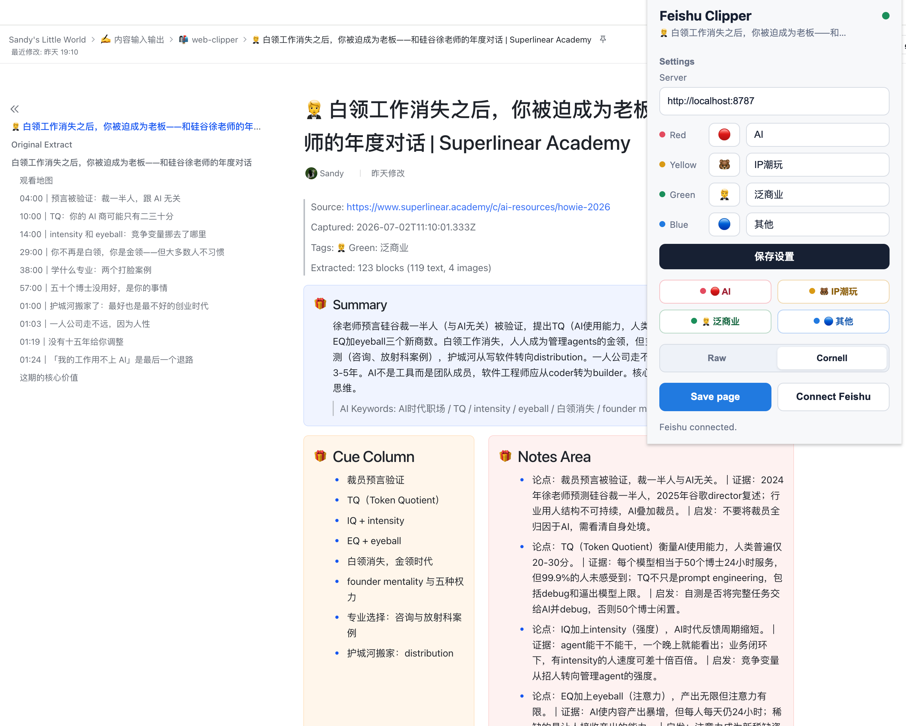
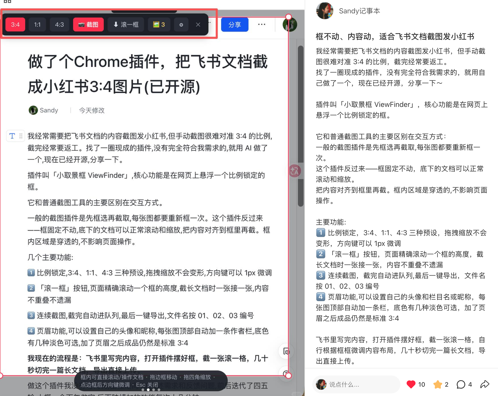

 01 / Chrome Extension · Feishu · DeepSeek Feishu Web Clipper 一个把网页一键收藏到飞书知识库的 Chrome 插件。它可以提取网页正文，保存成飞书文档，也可以调用 DeepSeek，把内容整理成康奈尔笔记法。 Chrome 插件飞书知识库Cornell NotesDeepSeek 项目故事 GitHub 小红书
 02 / Chrome Extension · Screenshot · Xiaohongshu ViewFinder 一个为飞书文档截图场景做的 Chrome 插件。它把 3:4、1:1、4:3 的取景框固定在网页上，底下内容可以继续滚动和缩放，适合把长文档稳定截成小红书图片。 Chrome 插件固定比例截图飞书文档小红书 项目故事 插件 ZIP